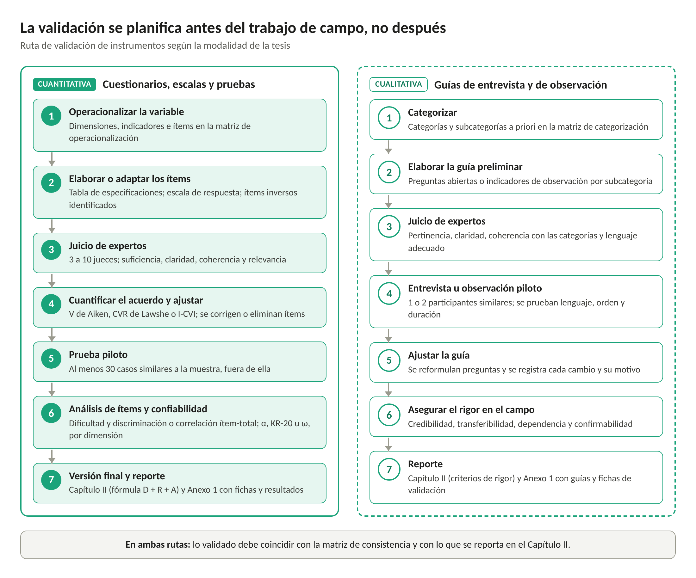

Parte III · Validación de instrumentos según la modalidad
15. Conceptos básicos
15.1. Validez
Los Standards for Educational and Psychological Testing definen la validez como el grado en que la evidencia y la teoría respaldan las interpretaciones de las puntuaciones de un instrumento para los usos propuestos (American Educational Research Association [AERA] et al., 2014). De esta definición se desprenden dos consecuencias prácticas: la validez no es una propiedad fija del instrumento, sino de las interpretaciones que se hacen con él, y se demuestra acumulando evidencias.
Los mismos estándares distinguen cinco fuentes de evidencia: el contenido, los procesos de respuesta, la estructura interna, las relaciones con otras variables y las consecuencias del uso (AERA et al., 2014). En una tesis de licenciatura, la evidencia mínima exigible es la basada en el contenido, que examina si los ítems representan adecuadamente el constructo y sus dimensiones (Sireci y Faulkner-Bond, 2014); se obtiene principalmente mediante el juicio de expertos.
15.2. Confiabilidad
La confiabilidad se refiere a la consistencia o precisión de las puntuaciones: un instrumento confiable produce resultados similares cuando mide lo mismo en condiciones equivalentes (Nunnally y Bernstein, 1994). La confiabilidad es condición necesaria, pero no suficiente, de la validez: un instrumento puede medir con gran consistencia algo distinto de lo que se pretende.
15.3. Rigor en la investigación cualitativa
En la investigación cualitativa no se aplican los conceptos psicométricos de validez y confiabilidad. Lincoln y Guba (1985) propusieron criterios paralelos de calidad: credibilidad, transferibilidad, dependencia y confirmabilidad. Estos criterios orientan tanto la construcción de las guías como el trabajo de campo y el análisis (Castillo y Vásquez, 2003; Noreña et al., 2012).
| Concepto | Pregunta que responde | Modalidad | Cómo se evidencia en la tesis |
|---|---|---|---|
| Validez de contenido | ¿Los ítems representan bien la variable y sus dimensiones? | Cuantitativa | Juicio de expertos cuantificado (V de Aiken, CVR o I-CVI) |
| Confiabilidad | ¿El instrumento mide con consistencia? | Cuantitativa | Alfa de Cronbach, KR-20 u omega en una prueba piloto; kappa entre observadores |
| Pertinencia de la guía | ¿Las preguntas o indicadores corresponden a las categorías? | Cualitativa | Juicio de expertos y entrevista u observación piloto |
| Rigor | ¿Los hallazgos son creíbles, transferibles, consistentes y confirmables? | Cualitativa | Triangulación, devolución a participantes, descripción densa, registro de decisiones, citas textuales |
Nota. Elaborado a partir de AERA et al. (2014), Lincoln y Guba (1985) y Nunnally y Bernstein (1994).

La ruta cuantitativa (línea continua) culmina en índices de validez de contenido y confiabilidad; la cualitativa (línea discontinua), en la aplicación de criterios de rigor. Elaboración propia.